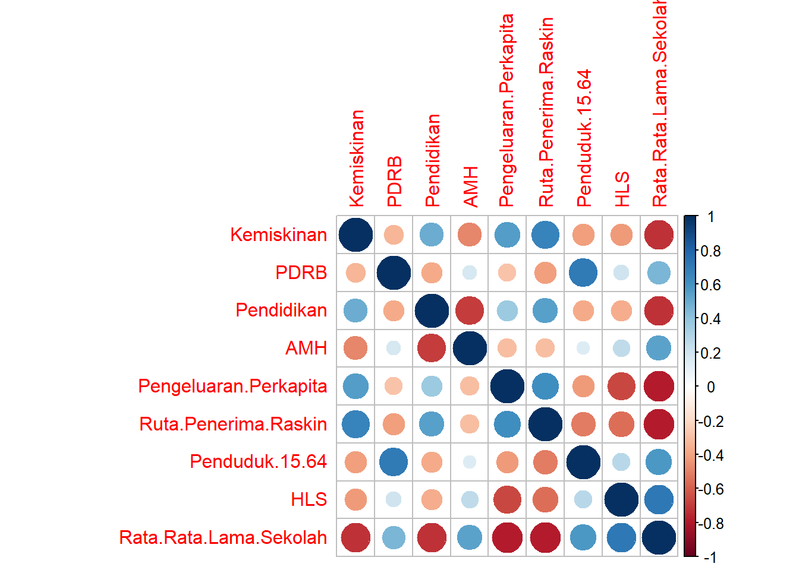
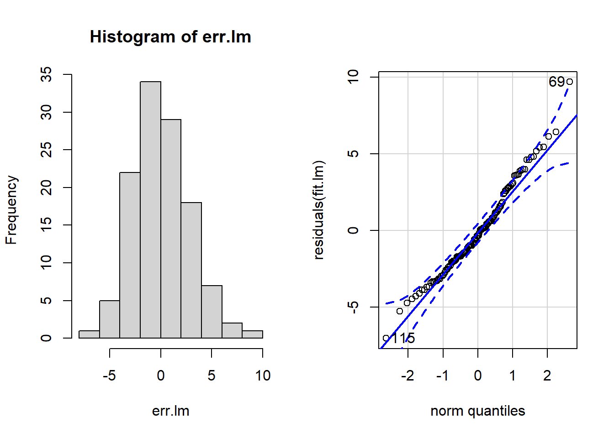
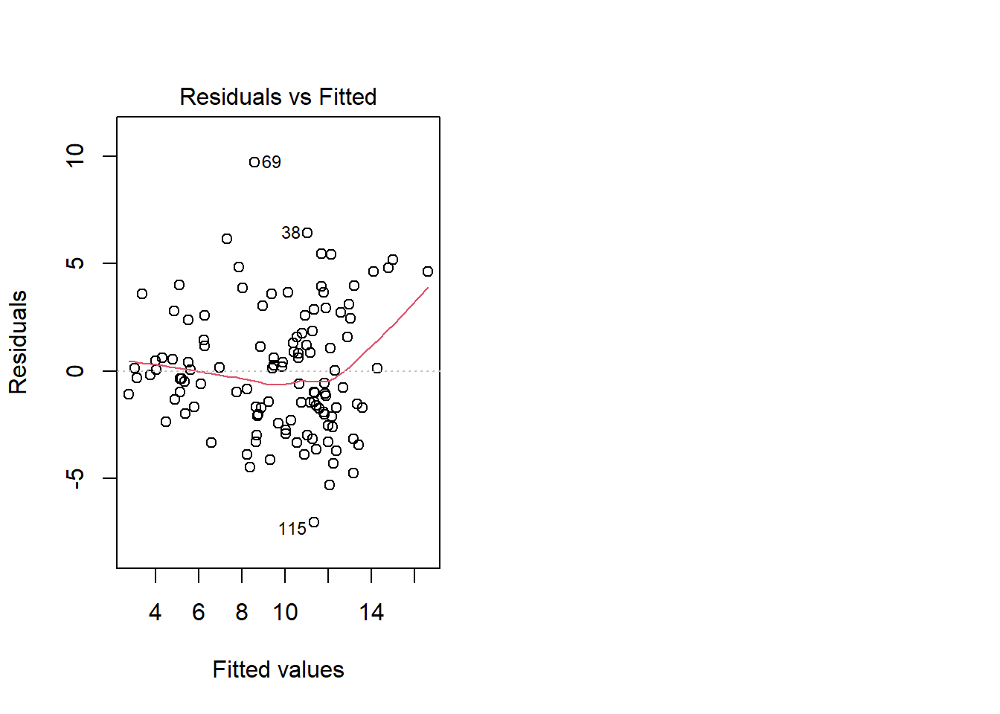
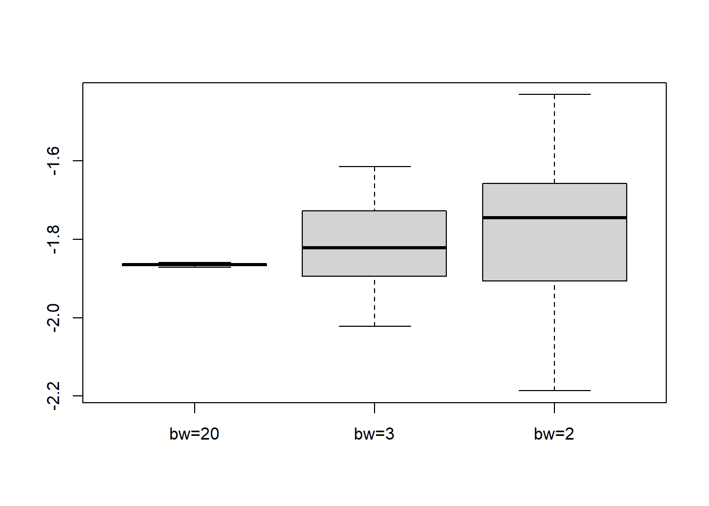
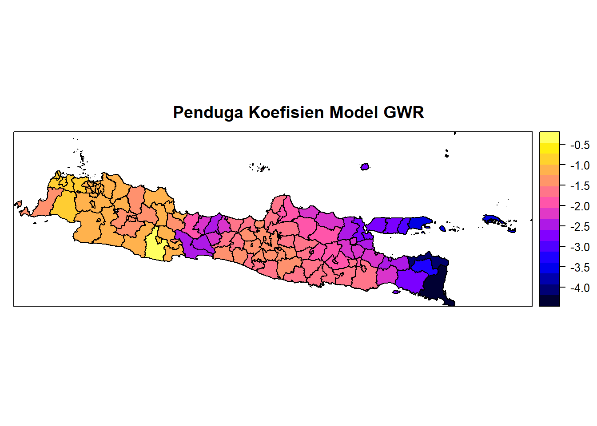
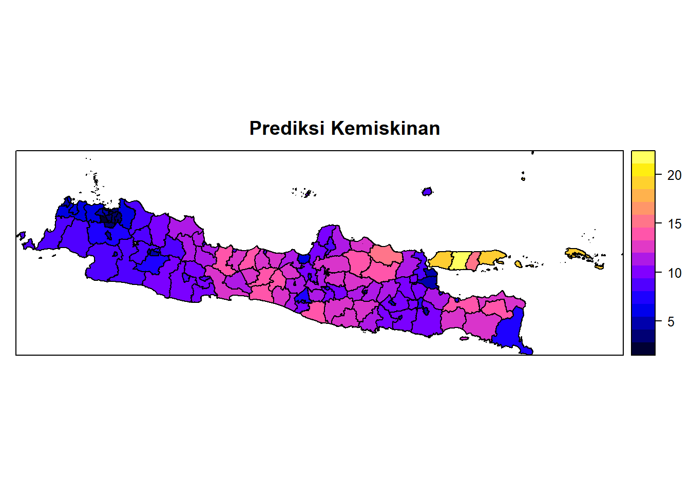
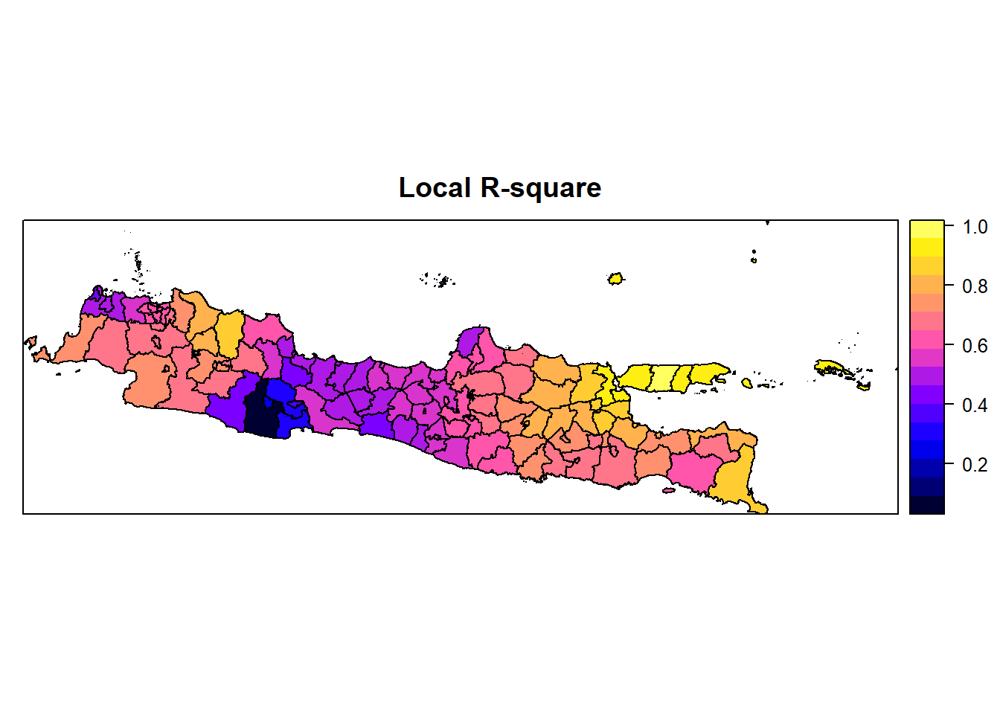

Modul 3 Geographically Weighted Regression (GWR)
Suatu pemodelan dapat bersifat global maupun lokal. Regresi linier klasik merupakan salah satu model global. Dikatakan global karena terdapat satu model yang berlaku umum untuk semua pengamatan.
Suatu model lokal bersifat lebih fleksibel, yang dalam konteks spasial, artinya setiap daerah/lokasi dapat memiliki model masing-masing.
Geographically Weighted Regression (GWR) merupakan salah satu model yang bersifat lokal. Beberapa keuntungan dengen menggunakan model ini, diantaranya adalah kita dapat:
menduga galat baku lokal
menghitung ukuran leverage lokal
melakukan pengujian terhadap signifikansi keragaman spasial pada penduga parameter lokal
menguji apakah model lokal lebih baik daripada model global
Terdapat salah satu stand-alone software untuk melakukan GWR, yaitu software GWR yang dapat diakses melalui http://ncg.nuim.ie/ncg/GWR/. Selain itu, pada R software, terdapat beberapa package yang dapat digunakan untuk membangun model GWR, yaitu:
GWmodel
spgwr
gwrr
Pada modul ini akan dibahas pemodelan GWR menggunakan package spgwr.
3.1 Eksplorasi Data
library(rgdal)
petajawa=readOGR(dsn="Jawamap", layer="jawa")## OGR data source with driver: ESRI Shapefile
## Source: "D:\Research (eksternal dept)\pelatihan spasial (adj)\modul\Jawamap", layer: "jawa"
## with 119 features
## It has 5 fieldsdatajawa=read.csv("Pulau Jawa.csv", header=T, sep=";")
petajawa$Kemiskinan<- datajawa$KemiskinanPlot berikut ini dapat dimanfaatkan untuk mengeksplorasi hubungan antar peubah.
corr<-cor(datajawa[,-(1:4)])
corrplot::corrplot(corr, is.corr=T)
Sebagai ilustrasi, peubah rata-rata lama sekolah akan digunakan untuk memodelkan kemiskinan di pulau Jawa. Sebagai langkah awal, kita akan terlebih dulu memodelkannya menggunakan regresi linear.
fit.lm<-lm(Kemiskinan~Rata.Rata.Lama.Sekolah, data=datajawa)
summary(fit.lm)##
## Call:
## lm(formula = Kemiskinan ~ Rata.Rata.Lama.Sekolah, data = datajawa)
##
## Residuals:
## Min 1Q Median 3Q Max
## -7.0384 -1.9865 -0.3389 1.6722 9.7042
##
## Coefficients:
## Estimate Std. Error t value Pr(>|t|)
## (Intercept) 24.7340 1.3417 18.44 <2e-16 ***
## Rata.Rata.Lama.Sekolah -1.8657 0.1624 -11.49 <2e-16 ***
## ---
## Signif. codes: 0 '***' 0.001 '**' 0.01 '*' 0.05 '.' 0.1 ' ' 1
##
## Residual standard error: 2.898 on 117 degrees of freedom
## Multiple R-squared: 0.5302, Adjusted R-squared: 0.5262
## F-statistic: 132 on 1 and 117 DF, p-value: < 2.2e-16Selanjutnya, diagnostik model dilakukan untuk memeriksa pemenuhan asumsi pada model regresi linear.
err.lm<-residuals(fit.lm)
shapiro.test(err.lm)##
## Shapiro-Wilk normality test
##
## data: err.lm
## W = 0.98029, p-value = 0.07818par(mfrow=c(1,2))
hist(err.lm)
car::qqPlot(residuals(fit.lm))
## [1] 69 115plot(fit.lm,which=1)
lmtest::bptest(fit.lm)##
## studentized Breusch-Pagan test
##
## data: fit.lm
## BP = 4.7982, df = 1, p-value = 0.02849
Terlihat pada output di atas bahwa sisaan model cenderung memiliki ragam yang tidak konstan. Selanjutnya juga akan diperiksa kebebasan sisaan menggunakan uji moran.
library(spdep)
w<-poly2nb(petajawa)
ww<-nb2listw(w, zero.policy=T)
lm.morantest(fit.lm, ww, alternative="two.sided", zero.policy = T)##
## Global Moran I for regression residuals
##
## data:
## model: lm(formula = Kemiskinan ~ Rata.Rata.Lama.Sekolah, data =
## datajawa)
## weights: ww
##
## Moran I statistic standard deviate = 5.9602, p-value = 2.519e-09
## alternative hypothesis: two.sided
## sample estimates:
## Observed Moran I Expectation Variance
## 0.38842759 -0.01284003 0.00453256Terlihat pada output bahwa terdapat autokorelasi spasial pada sisaan model regresi linier. Dengan mempertimbangkan bahwa sisaan model memiliki ragam yang tidak homogen, serta memiliki autokorelasi spasial, kita selanjutnya dapat mencoba memodelkannya dengan model regresi terboboti geografis atau GWR. Namun pada modul pembelajaran ini, kami akan perlihatkan pula bahwa pada pemodelan regresi spasial pun ternyata tetap menghasilkan sisaan dengan ragam yang heterogen.
LM<-lm.LMtests(fit.lm, ww,test=c("LMerr", "LMlag","RLMerr","RLMlag","SARMA"), zero.policy=T)
summary(LM)## Lagrange multiplier diagnostics for spatial dependence
## data:
## model: lm(formula = Kemiskinan ~ Rata.Rata.Lama.Sekolah, data =
## datajawa)
## weights: ww
##
## statistic parameter p.value
## LMerr 32.3011683 1 1.320e-08 ***
## LMlag 18.2380122 1 1.949e-05 ***
## RLMerr 14.0653693 1 0.0001766 ***
## RLMlag 0.0022132 1 0.9624773
## SARMA 32.3033815 2 9.670e-08 ***
## ---
## Signif. codes: 0 '***' 0.001 '**' 0.01 '*' 0.05 '.' 0.1 ' ' 1library(spatialreg)
sem<-errorsarlm(Kemiskinan~Rata.Rata.Lama.Sekolah,data=datajawa,ww, zero.policy=T)
sar<-lagsarlm(Kemiskinan~Rata.Rata.Lama.Sekolah,data=datajawa,ww, zero.policy=T)
gsm<-sacsarlm(Kemiskinan~Rata.Rata.Lama.Sekolah,data=datajawa,ww, zero.policy=T)
bptest.sarlm(sem)##
## studentized Breusch-Pagan test
##
## data:
## BP = 5.6364, df = 1, p-value = 0.01759bptest.sarlm(sar)##
## studentized Breusch-Pagan test
##
## data:
## BP = 4.0536, df = 1, p-value = 0.04408bptest.sarlm(gsm)##
## studentized Breusch-Pagan test
##
## data:
## BP = 3.8557, df = 1, p-value = 0.049583.2 Basic GWR
Kita dapat menggunakan fungsi gwr pada package spgwr untuk menyusun model GWR pada R software, seperti pada program berikut ini.
library(spgwr)## Warning: package 'spgwr' was built under R version 4.0.3## NOTE: This package does not constitute approval of GWR
## as a method of spatial analysis; see example(gwr)coordinates(datajawa)<-c("Longitude","Latitude")
gwr20 <- gwr(Kemiskinan~Rata.Rata.Lama.Sekolah,data=datajawa,bandwidth=20)
gwr20## Call:
## gwr(formula = Kemiskinan ~ Rata.Rata.Lama.Sekolah, data = datajawa,
## bandwidth = 20)
## Kernel function: gwr.Gauss
## Fixed bandwidth: 20
## Summary of GWR coefficient estimates at data points:
## Min. 1st Qu. Median 3rd Qu. Max. Global
## X.Intercept. 24.6607 24.6971 24.7366 24.7620 24.8026 24.7340
## Rata.Rata.Lama.Sekolah -1.8708 -1.8673 -1.8651 -1.8617 -1.8585 -1.8657Kita dapat pula mengganti bandwidth sesuai dengan yang diinginkan. Selanjutnya kita akan bandingkan perbedaan akibat penentuan bandwidth yang berbeda-beda tersebut.
gwr3 <- gwr(Kemiskinan~Rata.Rata.Lama.Sekolah,data=datajawa, bandwidth=3)
gwr3## Call:
## gwr(formula = Kemiskinan ~ Rata.Rata.Lama.Sekolah, data = datajawa,
## bandwidth = 3)
## Kernel function: gwr.Gauss
## Fixed bandwidth: 3
## Summary of GWR coefficient estimates at data points:
## Min. 1st Qu. Median 3rd Qu. Max. Global
## X.Intercept. 21.8567 23.3823 24.6838 25.4191 26.4774 24.7340
## Rata.Rata.Lama.Sekolah -2.0218 -1.8937 -1.8219 -1.7275 -1.6145 -1.8657gwr2 <- gwr(Kemiskinan~Rata.Rata.Lama.Sekolah,data=datajawa,bandwidth=2)
gwr2## Call:
## gwr(formula = Kemiskinan ~ Rata.Rata.Lama.Sekolah, data = datajawa,
## bandwidth = 2)
## Kernel function: gwr.Gauss
## Fixed bandwidth: 2
## Summary of GWR coefficient estimates at data points:
## Min. 1st Qu. Median 3rd Qu. Max. Global
## X.Intercept. 19.5961 22.5941 24.3392 25.7094 27.7499 24.7340
## Rata.Rata.Lama.Sekolah -2.1862 -1.9058 -1.7441 -1.6570 -1.4305 -1.8657betabw20 <- gwr20$SDF$Rata.Rata.Lama.Sekolah
betabw3 <- gwr3$SDF$Rata.Rata.Lama.Sekolah
betabw2 <- gwr2$SDF$Rata.Rata.Lama.Sekolah
boxplot(betabw20, betabw3, betabw2, names=c("bw=20","bw=3","bw=2"))
Output di atas memperlihatkan bahwa bandwidth yang lebih besar cenderung menghasilkan penduga koefisien model dengan rentang nilai yang lebih sempit. Sebaliknya, jika bandwidth yang digunakan lebih kecil, maka penduga koefisien model cenderung memiliki rentang nilai yang lebih lebar.
3.3 Menentukan Bandwidth Optimal
Penentuan bandwidth yang optimal dapat ditentukan berdasarkan kriteria AIC atau CV. Selain itu, kita juga dapat memilih fungsi pembobot kernel yang ingin digunakan pada pemodelan GWR.
bw1 <- gwr.sel(Kemiskinan~Rata.Rata.Lama.Sekolah,data=datajawa) # default method is CV## Bandwidth: 3.450257 CV score: 946.7623
## Bandwidth: 5.577059 CV score: 985.8033
## Bandwidth: 2.135821 CV score: 877.1735
## Bandwidth: 1.323454 CV score: 806.2682
## Bandwidth: 0.8213845 CV score: 752.5299
## Bandwidth: 0.5110882 CV score: 697.962
## Bandwidth: 0.3193146 CV score: 699.4435
## Bandwidth: 0.4257648 CV score: 686.988
## Bandwidth: 0.4182171 CV score: 686.7128
## Bandwidth: 0.4036248 CV score: 686.6801
## Bandwidth: 0.3714212 CV score: 689.1402
## Bandwidth: 0.4101954 CV score: 686.6098
## Bandwidth: 0.4102361 CV score: 686.6098
## Bandwidth: 0.4101547 CV score: 686.6098
## Bandwidth: 0.4076605 CV score: 686.62
## Bandwidth: 0.410114 CV score: 686.6098
## Bandwidth: 0.4101547 CV score: 686.6098gwr01 <- gwr(Kemiskinan~Rata.Rata.Lama.Sekolah,data=datajawa,bandwidth=bw1)
bw2 <- gwr.sel(Kemiskinan~Rata.Rata.Lama.Sekolah,data=datajawa,method="aic")## Bandwidth: 3.450257 AIC: 587.2351
## Bandwidth: 5.577059 AIC: 591.8688
## Bandwidth: 2.135821 AIC: 578.5693
## Bandwidth: 1.323454 AIC: 569.3341
## Bandwidth: 0.8213845 AIC: 562.5431
## Bandwidth: 0.5110882 AIC: 558.7068
## Bandwidth: 0.3193146 AIC: 575.363
## Bandwidth: 0.6296109 AIC: 559.226
## Bandwidth: 0.5177358 AIC: 558.6444
## Bandwidth: 0.5525482 AIC: 558.5357
## Bandwidth: 0.5819835 AIC: 558.6792
## Bandwidth: 0.547683 AIC: 558.531
## Bandwidth: 0.5465411 AIC: 558.5307
## Bandwidth: 0.5462381 AIC: 558.5307
## Bandwidth: 0.5462788 AIC: 558.5307
## Bandwidth: 0.5461974 AIC: 558.5307
## Bandwidth: 0.5462381 AIC: 558.5307gwr02 <- gwr(Kemiskinan~Rata.Rata.Lama.Sekolah,data=datajawa,bandwidth=bw2)
bwbs1 <- gwr.sel(Kemiskinan~Rata.Rata.Lama.Sekolah,data=datajawa,gweight=gwr.bisquare)## Bandwidth: 3.450257 CV score: 816.2604
## Bandwidth: 5.577059 CV score: 893.215
## Bandwidth: 2.135821 CV score: 765.5706
## Bandwidth: 1.323454 CV score: 696.4003
## Bandwidth: 0.8213845 CV score: 722.8235
## Bandwidth: 1.323495 CV score: 696.395
## Bandwidth: 1.633776 CV score: 719.824
## Bandwidth: 1.421531 CV score: 697.7054
## Bandwidth: 1.36793 CV score: 694.5978
## Bandwidth: 1.355794 CV score: 694.4734
## Bandwidth: 1.358597 CV score: 694.4715
## Bandwidth: 1.357479 CV score: 694.4699
## Bandwidth: 1.357438 CV score: 694.4699
## Bandwidth: 1.357397 CV score: 694.4699
## Bandwidth: 1.357438 CV score: 694.4699gwr03 <- gwr(Kemiskinan~Rata.Rata.Lama.Sekolah,data=datajawa,gweight=gwr.bisquare,
bandwidth=bwbs1)
bwbs2 <- gwr.sel(Kemiskinan~Rata.Rata.Lama.Sekolah,data=datajawa,
gweight=gwr.bisquare,method="aic")## Bandwidth: 3.450257 AIC: 570.608
## Bandwidth: 5.577059 AIC: 580.6548
## Bandwidth: 2.135821 AIC: 564.1267
## Bandwidth: 1.323454 AIC: 558.0575
## Bandwidth: 0.8213845 AIC: 575.6082
## Bandwidth: 1.633751 AIC: 558.9865
## Bandwidth: 1.310745 AIC: 558.1617
## Bandwidth: 1.435388 AIC: 557.6479
## Bandwidth: 1.429706 AIC: 557.6416
## Bandwidth: 1.420138 AIC: 557.6375
## Bandwidth: 1.420321 AIC: 557.6375
## Bandwidth: 1.420399 AIC: 557.6375
## Bandwidth: 1.42044 AIC: 557.6375
## Bandwidth: 1.420399 AIC: 557.6375gwr04 <- gwr(Kemiskinan~Rata.Rata.Lama.Sekolah,data=datajawa,gweight=gwr.bisquare,
bandwidth=bwbs2)3.4 Menentukan Model Terbaik
Penentuan model terbaik dapat ditentukan berdasarkan beberapa kriteria tertentu. Fungsi gwr memungkinkan kita untuk mengevaluasi model berdasarkan AIC dan global quasi-\(R^2\), dengan terlebih dulu menambahkan argumen hatmatrix=TRUE.
gwr01 <- gwr(Kemiskinan~Rata.Rata.Lama.Sekolah,data=datajawa,
hatmatrix=T, bandwidth=bw1)
gwr01## Call:
## gwr(formula = Kemiskinan ~ Rata.Rata.Lama.Sekolah, data = datajawa,
## bandwidth = bw1, hatmatrix = T)
## Kernel function: gwr.Gauss
## Fixed bandwidth: 0.4101547
## Summary of GWR coefficient estimates at data points:
## Min. 1st Qu. Median 3rd Qu. Max. Global
## X.Intercept. 12.68449 18.33784 23.15972 26.20076 38.10046 24.7340
## Rata.Rata.Lama.Sekolah -4.20789 -2.05946 -1.55904 -1.22414 -0.46292 -1.8657
## Number of data points: 119
## Effective number of parameters (residual: 2traceS - traceS'S): 34.33575
## Effective degrees of freedom (residual: 2traceS - traceS'S): 84.66425
## Sigma (residual: 2traceS - traceS'S): 2.291766
## Effective number of parameters (model: traceS): 25.10699
## Effective degrees of freedom (model: traceS): 93.89301
## Sigma (model: traceS): 2.176225
## Sigma (ML): 1.933067
## AICc (GWR p. 61, eq 2.33; p. 96, eq. 4.21): 562.1913
## AIC (GWR p. 96, eq. 4.22): 519.682
## Residual sum of squares: 444.673
## Quasi-global R2: 0.7874434Fungsi gwr memberikan nilai AIC dengan tiga pendekatan, sehingga kita memperoleh AICc, AICb, dan AICh.
gwr01$results$AICc## [1] 569.1585gwr01$results$AICb## [1] 562.1913gwr01$results$AICh## [1] 519.682Model terbaik adalah yang memiliki nilai AIC terkecil (bisa juga negatif) dan nilai global quasi-\(R^2\) yang terbesar. Namun demikian, kriteria tersebut tidak memberikan informasi inferensia apapun terkait siginifikansi model GWR.
Beberapa pendekatan uji dapat dilakukan untuk menguji \(H_0\) yang menyatakan bahwa model GWR tidak lebih baik daripada model OLS (regresi linier klasik), seperti yang dapat dilihat pada program-program berikut ini.
BFC02.gwr.test(gwr01)##
## Brunsdon, Fotheringham & Charlton (2002, pp. 91-2) ANOVA
##
## data: gwr01
## F = 2.2103, df1 = 117.000, df2 = 84.664, p-value = 7.714e-05
## alternative hypothesis: greater
## sample estimates:
## SS OLS residuals SS GWR residuals
## 982.8726 444.6730BFC99.gwr.test(gwr01)##
## Brunsdon, Fotheringham & Charlton (1999) ANOVA
##
## data: gwr01
## F = 3.169, df1 = 87.18, df2 = 96.67, p-value = 2.996e-08
## alternative hypothesis: greater
## sample estimates:
## SS GWR improvement SS GWR residuals
## 538.1996 444.6730LMZ.F1GWR.test(gwr01)##
## Leung et al. (2000) F(1) test
##
## data: gwr01
## F = 0.62521, df1 = 96.67, df2 = 117.00, p-value = 0.00875
## alternative hypothesis: less
## sample estimates:
## SS OLS residuals SS GWR residuals
## 982.8726 444.6730LMZ.F2GWR.test(gwr01)##
## Leung et al. (2000) F(2) test
##
## data: gwr01
## F = 1.9813, df1 = 47.916, df2 = 117.000, p-value = 0.001549
## alternative hypothesis: greater
## sample estimates:
## SS OLS residuals SS GWR improvement
## 982.8726 538.1996Berdasarkan output di atas, seluruh uji menunjukkan nilai \(p\)-value yang lebih kecil daripada taraf nyata 0.05, artinya \(H_0\) dapat ditolak, dan kita dapat menyimpulkan bahwa model GWR lebih baik daripada OLS, pada taraf nyata 5%.
LMZ.F3GWR.test(gwr01)##
## Leung et al. (2000) F(3) test
##
## F statistic Numerator d.f. Denominator d.f. Pr(>)
## (Intercept) 2.6985 46.6539 96.67 1.988e-05
## Rata.Rata.Lama.Sekolah 2.1191 25.3140 96.67 0.004783
##
## (Intercept) ***
## Rata.Rata.Lama.Sekolah **
## ---
## Signif. codes: 0 '***' 0.001 '**' 0.01 '*' 0.05 '.' 0.1 ' ' 13.5 Menginterpretasikan Hasil Pemodelan GWR
Koefisien model GWR bersifat lokal, sehingga nilai penduga koefisien akan diperoleh pada setiap titik pengamatan. Oleh karenanya, interpretasi model GWR seringkali dilakukan dengan membuat visualisasi dalam bentuk peta, baru kemudian menginterpretasikannya.
str(gwr01$SDF)## Formal class 'SpatialPointsDataFrame' [package "sp"] with 5 slots
## ..@ data :'data.frame': 119 obs. of 12 variables:
## .. ..$ sum.w : num [1:119] 7.49 14.3 13.86 13.78 13.72 ...
## .. ..$ (Intercept) : num [1:119] 17.1 15.5 15.8 15.8 15.7 ...
## .. ..$ Rata.Rata.Lama.Sekolah : num [1:119] -1.21 -1.08 -1.11 -1.1 -1.09 ...
## .. ..$ (Intercept)_se : num [1:119] 3.52 2.76 2.79 2.83 2.85 ...
## .. ..$ Rata.Rata.Lama.Sekolah_se : num [1:119] 0.35 0.287 0.29 0.294 0.295 ...
## .. ..$ gwr.e : num [1:119] 5.168 -0.198 0.191 0.206 -0.93 ...
## .. ..$ pred : num [1:119] 6.81 3.03 2.95 3.38 4.32 ...
## .. ..$ pred.se : num [1:119] 0.761 0.775 0.794 0.708 0.554 ...
## .. ..$ localR2 : num [1:119] 0.485 0.633 0.642 0.616 0.602 ...
## .. ..$ (Intercept)_se_EDF : num [1:119] 3.71 2.91 2.94 2.98 3 ...
## .. ..$ Rata.Rata.Lama.Sekolah_se_EDF: num [1:119] 0.369 0.303 0.306 0.309 0.311 ...
## .. ..$ pred.se : num [1:119] 0.801 0.816 0.836 0.746 0.583 ...
## ..@ coords.nrs : num(0)
## ..@ coords : num [1:119, 1:2] 107 107 107 107 107 ...
## .. ..- attr(*, "dimnames")=List of 2
## .. .. ..$ : chr [1:119] "1" "2" "3" "4" ...
## .. .. ..$ : chr [1:2] "Longitude" "Latitude"
## ..@ bbox : num [1:2, 1:2] 105.69 -8.24 114.37 -5.8
## .. ..- attr(*, "dimnames")=List of 2
## .. .. ..$ : chr [1:2] "Longitude" "Latitude"
## .. .. ..$ : chr [1:2] "min" "max"
## ..@ proj4string:Formal class 'CRS' [package "sp"] with 1 slot
## .. .. ..@ projargs: chr NABeberapa nilai dapat diperoleh langsung dari output fungsi gwr, yaitu penduga koefisien, hasil prediksi model, serta local-\(R^2\). Selanjutnya, interpretasi dapat disesuaikan dengan konteks penelitian.
petajawa$beta<-gwr01$SDF$Rata.Rata.Lama.Sekolah
petajawa$pred<-gwr01$SDF$pred
petajawa$localR2<-gwr01$SDF$localR2
spplot(petajawa, "beta", main="Penduga Koefisien Model GWR")
spplot(petajawa, "pred", main="Prediksi Kemiskinan")
spplot(petajawa, "localR2", main="Local R-square")
3.6 Sumber Pustaka
Brazil, N. (n.d.). Geographically weighted regression. CRD 230: Spatial Methods in Community Research. https://crd230.github.io/gwr.html#ordinary_least_squares_regression
Brunsdon, C. 2015. Geographically Weighted Regression. https://rstudio-pubs-static.s3.amazonaws.com/176883_06a3fa1fc77444be85e94dcd97ba9a34.html
Dennett, A. (2014, November 17). An introduction to geographically weighted regression in R. https://rstudio-pubs-static.s3.amazonaws.com/44975_0342ec49f925426fa16ebcdc28210118.html